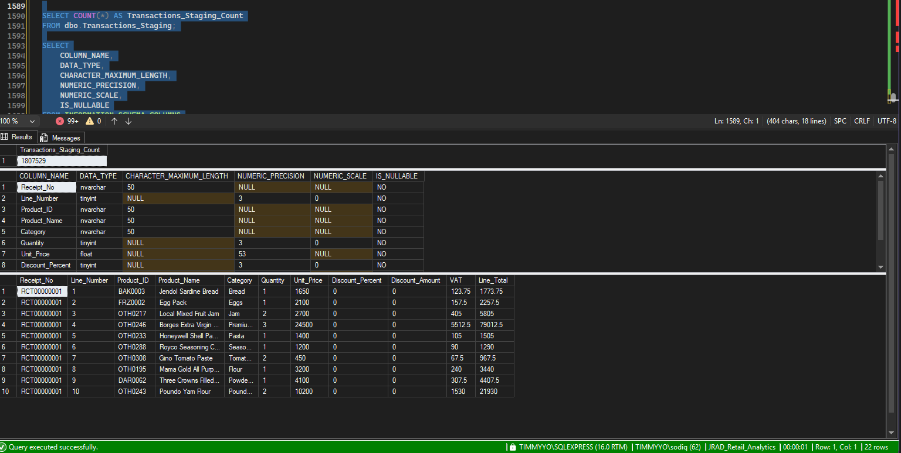
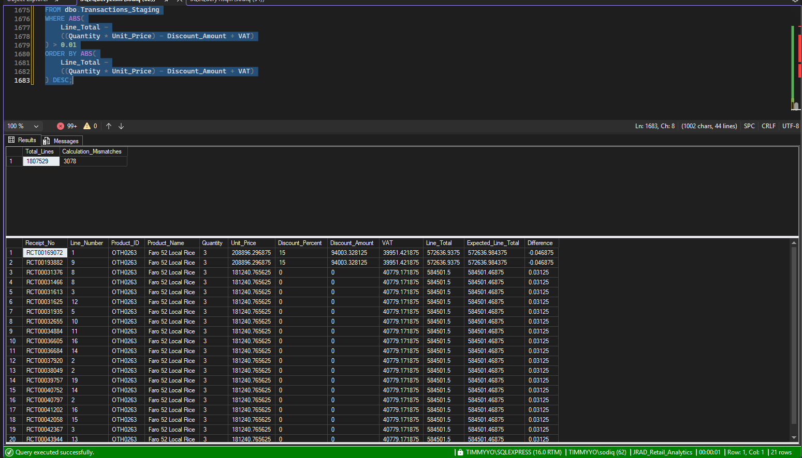
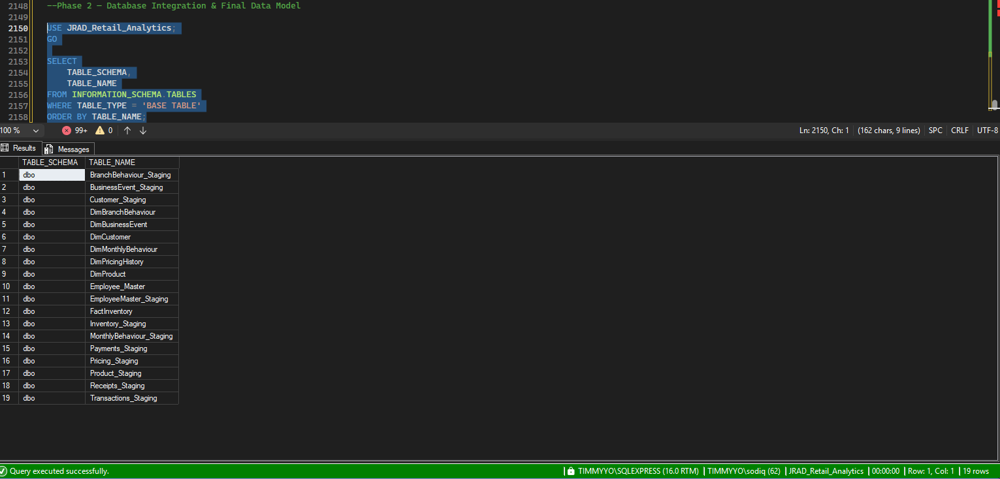
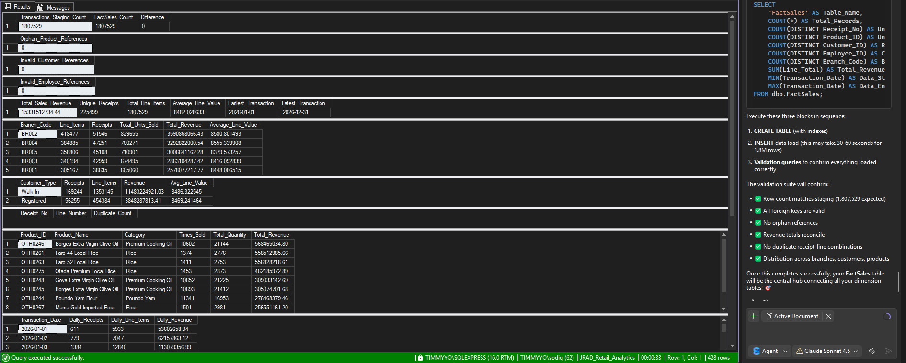
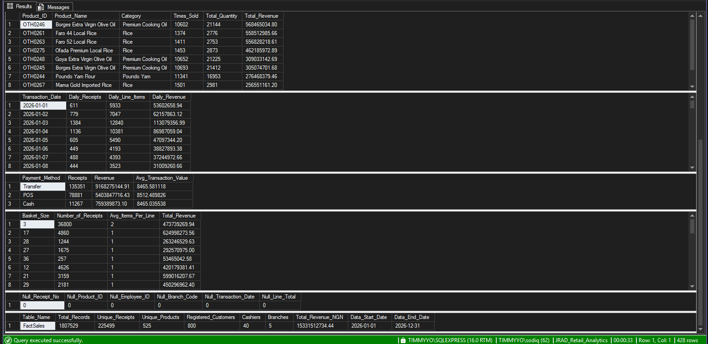
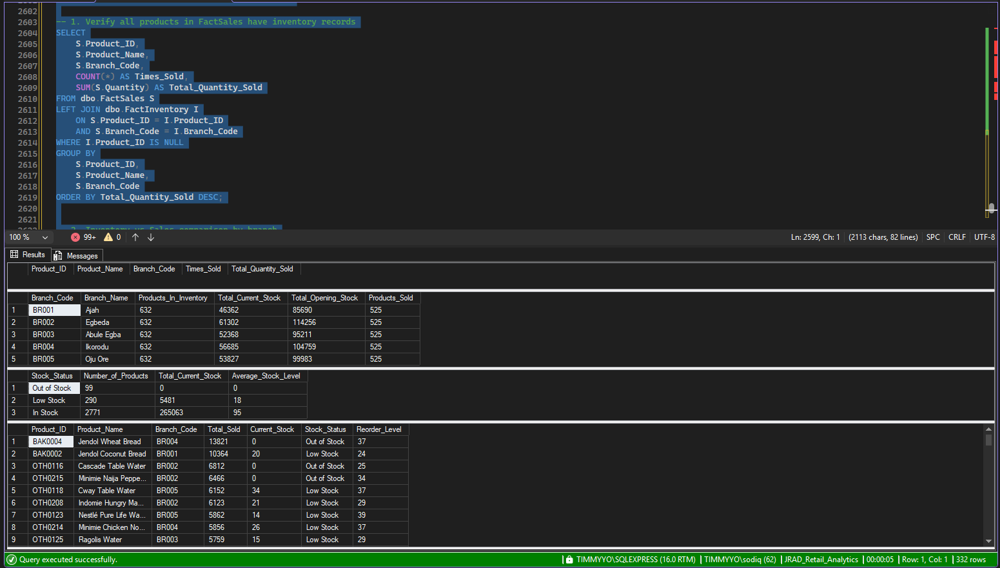

JRAD Retail is a fictional and simulated retail environment created for portfolio and analytical purposes. The project is not affiliated with, endorsed by, or based on proprietary data from any real retailer.
The SQL analysis was performed using the simulated JRAD Retail Data System developed from custom business rules, behavioural logic, probability distributions and transaction-generation processes.
Project Overview
The JRAD Retail Data System was designed to simulate a realistic retail environment from the ground up.
After designing the business logic, customer behaviour, product ecosystem, branch activity, seasonal events and transaction rules, Python was used to generate a large-scale interconnected retail dataset.
This project represents the next stage of that journey: moving inside the retail engine to structure, validate and analyze the generated data using SQL.
The goal was to examine how millions of interconnected retail records could be transformed into a reliable analytical environment capable of answering meaningful business questions.
The Scale of the Retail Engine
The SQL environment was built around a large interconnected retail dataset containing transactional, customer, product, branch, payment and operational information.
1.8M+
Transaction Lines
225K+
Receipts Generated
525
Products
5
Retail Branches
800
Registered Customers
40
Cashier / Employee Records

Building the SQL Environment
Before meaningful analysis could begin, the different datasets had to be examined as part of one interconnected retail system.
The SQL environment brought together multiple business entities, including:
- Customers
- Products
- Branches
- Sales Transactions
- Receipts
- Payments
- Employees and Cashiers
- Inventory
- Business Events
- Customer Experience Data
- Queue and Operational Metrics
- Product Pricing History
The challenge was understanding how these datasets connected and ensuring that the relationships could support reliable downstream analysis.
Data Validation & Quality Checks
Before drawing business conclusions, the data environment was subjected to validation checks.
SQL was used to investigate potential issues including:
- Duplicate records
- Orphan records
- Missing relationships between datasets
- Referential integrity issues
- Receipt and payment consistency
- Transaction-level validation
- Revenue reconciliation
Business analysis is only as reliable as the underlying relationships between the data. Validation was therefore treated as part of the analytical process rather than something skipped before reporting.

Building the Analytical Foundation
Once the relationships between the datasets had been examined, the retail system could be structured for analysis across multiple business dimensions.
A central sales structure was used to connect transactional activity with relevant dimensions such as customers, products, branches, payments and operational records.
This created an analytical foundation capable of supporting questions across the entire retail ecosystem rather than analyzing each dataset in isolation.

Sales & Revenue Analysis
SQL was used to investigate how commercial activity was distributed across the JRAD Retail environment.
The analysis explored:
- Total transaction activity
- Revenue patterns
- Daily sales performance
- Branch-level performance
- Product demand
- Transaction volume
- Basket behaviour
This stage moved the project beyond raw transactional data and into questions around where retail activity was concentrated and how performance differed across the business.

Customer & Payment Behaviour
The customer and payment datasets were analyzed to understand how shoppers interacted with the retail environment.
Areas investigated included:
- Customer transaction behaviour
- Registered and unregistered customer activity
- Payment method distribution
- Receipt-level purchasing patterns
- Basket size behaviour
- Customer contribution to retail activity
Revenue tells us how much was spent. Customer analysis helps explain who is driving that activity and how those shopping behaviours can later support loyalty, retention and targeted engagement strategies.

Product Demand & Branch Performance
Product and branch analysis was performed to investigate how demand and commercial activity varied across the simulated retail network.
- Product-level sales activity
- High-demand products
- Branch performance
- Revenue contribution
- Transaction volume differences
- Product availability patterns
These analyses provide the foundation for later decisions around inventory allocation, branch operations, product planning and performance optimization.
Inventory & Stock Risk Analysis
One of the important operational areas investigated was product availability.
Inventory records were classified into operational categories:
- In Stock
- Low Stock
- Out of Stock
This is particularly important in a retail environment because stock availability directly affects both revenue and customer experience.
- A substituted purchase
- A delayed purchase
- Customer dissatisfaction
- A completely lost sale
This analysis creates an important bridge to the next stage of the JRAD project, where inventory risks, customer behaviour and operational performance will be visualized and investigated further.

SQL Analysis Workflow
Key Skills Demonstrated
- SQL Querying
- Relational Data Analysis
- Data Validation
- Data Quality Assessment
- Referential Integrity Checks
- Data Modeling
- Fact and Dimensional Analysis
- JOINs
- Common Table Expressions (CTEs)
- Aggregations
- Window Functions
- Revenue Analysis
- Customer Analysis
- Product Performance Analysis
- Branch Performance Analysis
- Inventory Analysis